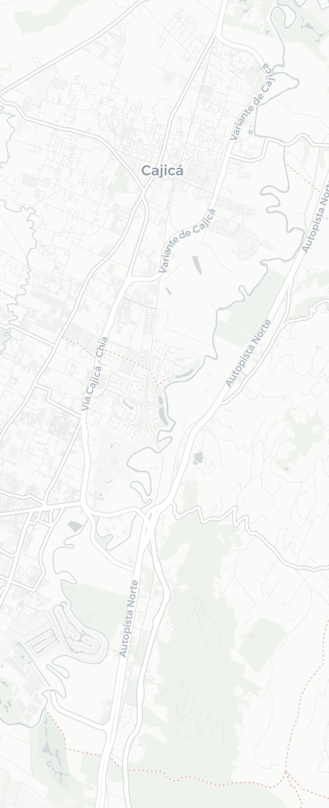
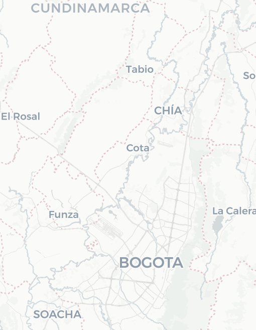

Resultados reales del piloto: 30 recorridos en 3 vehículos, con la evidencia de velocidad, conducción, cumplimiento de chequeos y trazabilidad que la plataforma deja registrada de forma automática.
En una frase: con 3 vehículos el piloto ya produjo evidencia suficiente para intervenir un vehículo, dos franjas horarias y ocho puntos de vía, en lugar de hacer una campaña general para toda la operación.
Con tres vehículos y cuatro conductores, la plataforma produjo un expediente de operación que antes no existía: cada evento con placa, hora exacta, coordenada, duración y velocidad máxima.
Ninguno de estos eventos habría quedado registrado sin la plataforma. Cada uno trae placa, fecha y hora exacta, coordenada de inicio y fin, duración en segundos y velocidad máxima — es decir, evidencia verificable, no percepción.
Los 129 eventos suman 97 minutos por encima del umbral de 60 km/h y 107,5 km recorridos en exceso. El pico llegó a 81 km/h.
30 recorridos ejecutados en 18 días de operación, con inicio, fin, duración, conductor y vehículo. Es la base sobre la que se puede auditar cualquier día del mes hacia atrás.
Cada columna es un día con operación registrada; el color identifica el vehículo.
Recorridos, horas de operación válidas y conductor asignado.
129 eventos por encima de 60 km/h. Lo valioso no es el total: es que el total se descompone y señala exactamente dónde intervenir.
Eventos por placa, 1 de junio – 23 de julio. Umbral 60 km/h.
Eventos por hora de inicio (0–23 h). El 93,8 % cae en las 6 a.m. y las 4 p.m.
Días con al menos un evento. El eje es una secuencia de días medidos, no una línea de tiempo continua: entre el 11/06 y el 23/07 no hay días con eventos en el reporte.
Velocidad máxima alcanzada en cada evento, agrupada. Umbral 60 km/h.
Ordenados por velocidad máxima. Cada uno abre el punto exacto en el mapa.
Al agrupar los 129 eventos por cercanía geográfica aparecen 32 puntos recurrentes, y 122 de ellos (94,6 %) caen sobre un mismo tramo de la Autopista Norte, entre Chía y Cajicá: unos 12,5 km de vía.

Autopista Norte · Chía → CajicáCartografía © OpenStreetMap · teselas © CARTO. Puntos ubicados con las coordenadas del reporte.
Cada círculo agrupa los eventos ocurridos en un radio de ~330 m; el área del círculo es la cantidad de eventos. El norte está arriba.

El recuadro verde es el tramo del mapa grande. Los 7 eventos restantes ocurrieron en Bogotá y en el corredor occidental (•).
La plataforma califica a cada conductor con cuatro señales objetivas: excesos de velocidad, giros y frenadas bruscas, formularios de chequeo diligenciados y puntualidad al diligenciarlos. El puntaje es comparable entre personas y entre periodos.
Escala 0 a 5. Periodo del piloto: 21 de julio – 19 de agosto.
Dos conductores aparecen con métricas en cero o casi en cero: Lorenzo Cabrera Gómez con 2 formularios y Robinson Rodallega Balanta sin actividad.
No es un mal desempeño: es que no participaron en la prueba. Fueron creados en la plataforma para tener la nómina completa, pero durante el piloto no se les asignó operación como a los otros tres. Sin recorridos ni chequeos no hay nada que calificar, y el puntaje lo refleja tal cual.
Giros/frenadas se lee "giros bruscos / frenadas bruscas". Puntualidad es el porcentaje de formularios diligenciados dentro de la ventana esperada. Los 3 excesos de Luis Alberto Nocua son los del 23 de julio, único día del periodo del piloto con eventos de velocidad en el reporte.
La misma medición que muestra la operación muestra dónde la operación no se está registrando bien. Se presenta abierto porque es la parte accionable de esta semana.
Cada punto de abajo se sostiene con un dato de este mismo piloto, no con una promesa de producto.